- ...eine literarisch-musikalische & heiter-besinnliche Begegunung...
- Mit einer angenehmen Portion Humor präsentieren wir, die
- BockSpäße
- Ihnen Dinge des Lebens, in Reimen.
- Lohnend und reizvoll zugleich ist es,
- sich diese schägen Gedanken durch die Ohren gehen zu lassen.
Über Uns
Meine Damen und Herren,
ich begrüße Sie.
Möglicher Weise begegneten wir uns schon bei der Buchlesung zu „Bock Späße“ persönlich. Insofern kennen Sie meine Frohsinngedichte schon und möchten sie sich noch einmal zuhause anhören, das freut mich. Sie, die Sie noch keine Besucher in unserer Veranstaltung waren, möchte ich erst einmal herzlich begrüßen und mit wenigen Worten auf unser Hörbuch einstimmen.
Es liegt ein Hörbuch vor, aus welchem meine Frau und ich im Wechsel zitieren. Diese Rezitationen werden durch Michael Engelke auf seiner Gitarre musikalisch zueinander übergeleitet. Gemäß dem Titel des Hörbuches sind meine Reime humorige Gedichte, die wir Ihnen vortragen. Unterhaltend, freundlich, manchmal tiefsinnig getextet wurden.
Lassen Sie sich überraschen. Lohnend und reizvoll zugleich ist es, sich manch schrägen Gedanken des Lebens so durch die Ohren gehen zu lassen.
Wir Drei sind gut gestimmt und unterhaltend mit den Frohsinngedichten unterwegs, die über das Menschsein scherzen, manchmal aber auch die Seele streicheln.
Die trefflichen Grafiken und Karikaturen zu den Gedichten stammen von Harald Kretzschmar. Er war von den 50er bis zu den 90er Jahren der bekannte Karikaturist der wöchentlich aktuellen Porträts aus dem satirischen „Eulenspiegel“. Bis heute ist er mit seinem feinsinnigen Humor unterwegs und erfreut unsere Herzen.
Und sowohl den guten Ton, als auch die Produktion dieses Hörbuches haben wir Manuel Schmid, dem Audio-Ingenieur sowie Sänger der „Stern-Combo-Meißen“ zu verdanken.
Wir alle von den „Bock Späßen“ würden uns sehr freuen, wenn unsere Darbietung bei Ihnen einen willkommenen Landeplatz findet.
Ihr Bernhard Bock.
Gedichte
-
Der Frosch und die Fliege am Hals
Ein Frosch, der liebte Raupen, Spinnen, Mücken. Er brauchte sie - und fand sie zum Entzücken, denn er, er hatte sie zum Fressen gern. Sie zu schonen, lag ihm diesbezüglich fern.
Als ihn sein Blick im Spiegel traf, da fragte er: „Bin ich zu brav, um nur noch Mücken zu verspeisen?“
Der Spiegel tat auf seine Fliege weisen, die Herr Frosch mit großem Stolze trug.
„Schluss mit der Rücksicht, jetzt ist's genug.“ und er sah gierig auf die Fliege: „Wart's nur ab, wenn ich dich Fliege kriege!“
Doch diese Fliege war zum Fressen gar nichts Nutz, sie hing an seinem Hals und hatte Artenschutz.

-
Gedanken einer Ehefrau
Ich habe eine Nähmaschine, damit sie mir beim Nähen diene. Dazu hab ich 'nen Fingerhut, der tut so meinen Fingern gut, wenn ich dann durch das Öhrloch spähe, bevor ich meine Bluse nähe, denn sonst würd' ich mir ohne ihn die Nadel durch den Finger zieh'n.
Dann hab' ich noch ein Kleiderspind, worin ich meine Kleider find'. Dazu auch noch 'nen großen Bügel, mit dem ich meinen Alten zügel, weil er von mir mit Freuden rennt.
Wenn er bei meiner Freundin pennt.

-
Gedanklicher Freiflug eines Hundes
Wäre ich, der Hund, ein Schmetterling, das wär' ein Ding.
Dann wär' ich schön und könnte fliegen, müsste nicht mehr in der Ecke liegen und auf unsinnige Befehle warten.
Könnt' segelnd in die Sonne starten und schwebend mir die Welt erkunden, auch manch Ärger wär' dann überwunden.
Doch, das Jahr wird irgendwann mal älter und das Wetter immer kälter. Und ich, der Falter, wär' dann weg!
Na, so ein Dreck.

-
Ein nasser Reinfall
Ich, der Kater, wollte mir die Maus erjagen. Dabei gab es einen Reinfall zu beklagen.
Es verlief auch wirklich unnatürlich dumm, denn ich landete daneben - im Aquarium.
Dadurch sieht sie jetzt verschwommen aus, diese kleine, graue Maus.
Gedanklich hatte ich sie schon. Ein, wie ich denk', verdienter Lohn.
Vom Wollen war sie fast schon mein, doch fiel ich auf ihr Trugbild rein und habe mich nach hier versprungen.
So ist der Fang mir nicht gelungen, weil ich sie jetzt nicht fassen kann.
Aber:
Wenn ich sie wieder klarer sehe, dann!
Kurzgeschichten
Lebenslaufe
Bernhard Bock
Bernhard Bock, geb. 25.09.1936 in Berlin, Ist der inhaltliche Finder der vorliegenden Frohsinngedichte, der Verseschmied der „Bock Späße“.
Aus seinem Lebenslauf:

- An der „Deutschen Hochschule für Filmkunst“, Potsdam-Babelsberg, Filmproduktion studiert
- Produktionsleiter beim DEFA-Studio für populärwissenschaftliche Filme in Potsdam-Babelsberg
- Produktions-Chef beim Deutschen Fernsehfunk
- Büroleiter an der Humboldt-Universität zu Berlin, die Kunst nur von berufswegen verlassend
- Videojournalist beim TV- Privatsender, im Rentenalter mit Traumberuf
- Freiberuflicher Dramaturg
- mit 76 Jahren absichtlich arbeitslos
- Doch dann: das Leben auf 387 Computerseiten beschrieben.
- Und jetzt liegt das Hörbuch „Bock Späße“, mit den Frohsinngedichten vor
Marion Bock
ist die „Co-Pilotin“, auf Veranstaltungen, bei der Lesung der „Bock-Späße“ und war auch die inhaltliche Lektorin meiner Frohsinngedichte.

- Studium der Staats- und Rechtswissenschaften
- Verschiedene leitende Funktionen in der Sozial- und Wohnungswirtschaft
- Ausbildung zur Heilpraktikerin für Psychotherapie
- Assistenz im Schwerstbehindertenbereich / ambulante Dienste
- Stetig für und mit der Kultur engagiert, gesungen und moderiert
- Über Jahrzehnte hatte sie die ehrenamtliche Leitung und Organisation von Veranstaltungen für den Verein „Indische Solidaritätsaktion e.V.“.
Harald Kretzschmar

Harald Kretzschmar, geb am 23. 5. 1931 in Berlin,
ist der bekannte Karikaturist, Grafiker und Feuilletonist des satirischen „Eulenspiegel“, als „der freche Zeichenstift des Eulenspiegels“ charakterisiert und ist „ein ganz Großer seiner Zunft.“
Er begleitete uns bei der Entstehung des Hörbuches „Bock Späße“, u. a. mit seinen Karikaturen zu den erdachten „Darstellern“ und Grafiken der Gedichte.
Aus seinem Lebenslauf:
. Er studierte von 1950 bis 1955 an der Hochschule für Grafik und Buchkunst in Leipzig und gehörte von 1955;
. bis Anfang der 90er Jahre zum festen Stamm der Zeichner des legendären satirischen „Eulenspiegel“ der DDR.
. Harald Kretzschmar ist ein gefragter Schnellporträtist bei Veranstaltungen der verschiedensten Art.
Michael Engelke
begleitet uns musikalisch auf der Gitarre bei unseren Lesungen und gestaltete das musikalische Konzept zu unserem Programm. Er ist ein Musiker mit Leib und Seele.

- Erste Kontakte zur Musik in der Gruppe „Morgenstern“
- Gesangsstudium an der Hochschule für Musik „Hans Eisler“
- Solodiplom an der Hochschule „C.M. von Weber in Dresden
- Dirigierunterricht bei Prof. Horst Müller
Manuel Schmid
Seine Leidenschaft zur Musik entdeckte Manuel Schmidt schon im Alter von 7 Jahren. Als Sänger und Keyboarder ist er seit dem Jahre 2000 in Sachen Musik unterwegs.

- Klavier und Gesangsunterricht an den Musikschulen Altenburg und Borna
- Tontechnik-Studium am SAE-Institut Leipzig mit Abschluss
- seit 2008 Pianist beim Altenburger Gospelchor „Colours of Soul“
- seit 2000 Sänger und Pianist im kammermusikalischen Ensemble „eccolo“
- Seit 2012 Sänger und Keyboarder der ostdeutschen Altrocklegende „Stern-Combo-Meißen“.
- Manuel Schmid wirkt neben seinem Engagement als Solokünstler in verschiedenen musikalischen Projekten als Musiker, Produzent und Tontechniker mit.
Fotos


Hörbuch
-

-

-

-

-

- 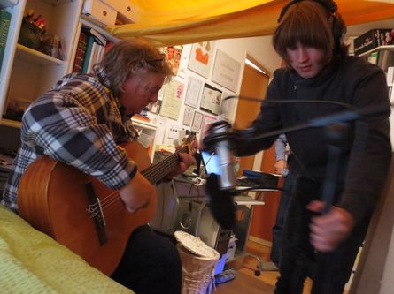
-

-

-

- 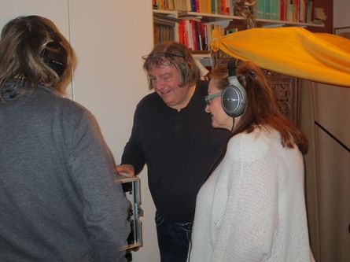
- 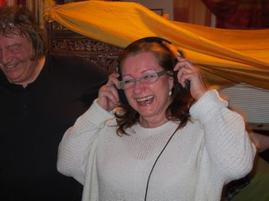
-

- 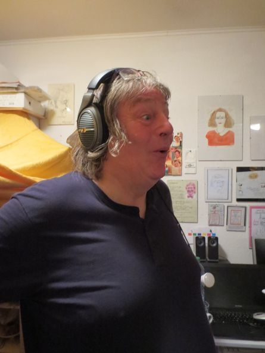
- 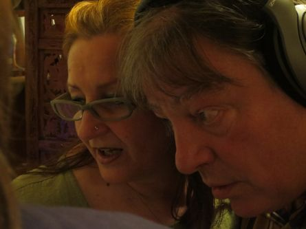
- 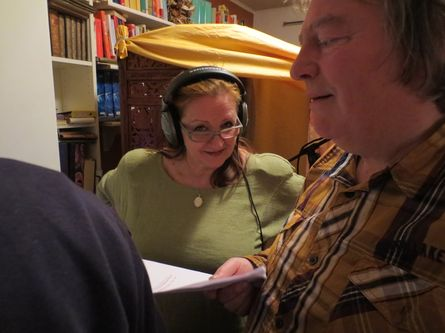
- 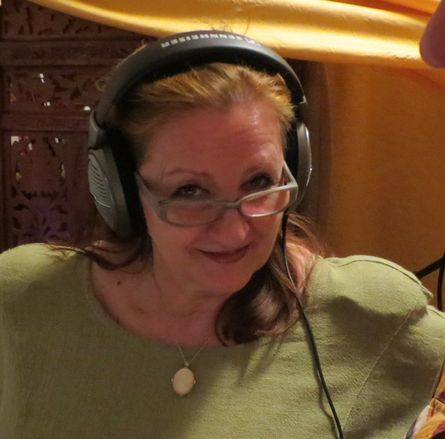
- 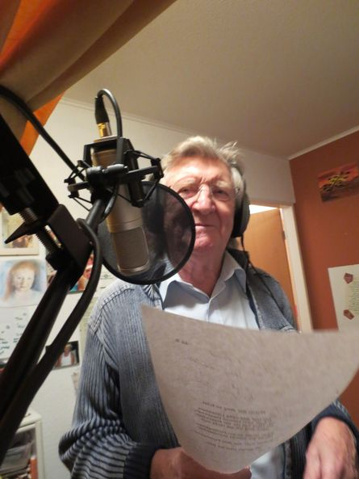
- 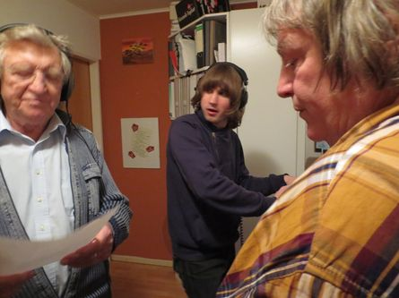
- 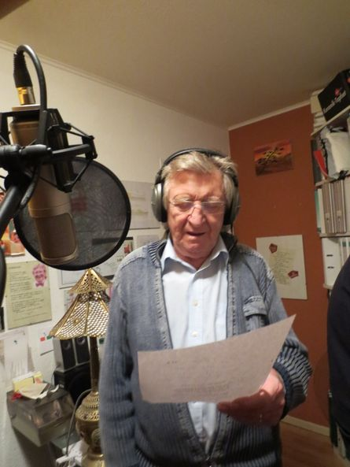
- 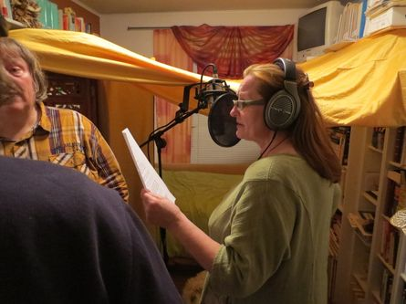
- 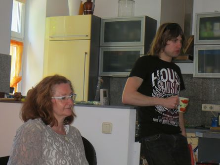
- 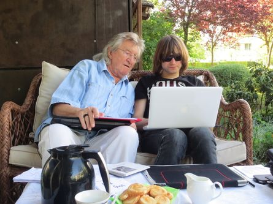
Wenn Jemanden etwas gefällt, dann möchte er es auch oft mit nach Hause nehmen...
Daran ist gedacht worden und das Hörbuch mit dem Titel: „Bock Späße“ ist entstanden.
Das kann nach einer Lesung erworben und mitgenommen werden. Zu Hause ist es dem gewesenen Besucher dann möglich, die Hörfreude aus der Veranstaltung noch einmal nachzuvollziehen, ja vielleicht sogar noch zu vertiefen, denn alle vorgetragenen Gedichte finden sich auf der CD wieder,
auch mit Musik - und sogar Effekte haben sich in das Hörbuch „eingeschlichen“ - Sie dürfen gespannt sein.
Sowohl den guten Ton und die musikalische Mitgestaltung, als auch die Produktion dieses Hörbuches haben wir Manuel Schmid, Sänger und Keyboarder der „Stern-Combo-Meißen“, ebenfalls Audio-Ingenieur seines Zeichens, zu verdanken. Für das vorliegende Hörbuch haben Michael Engelke und er das musikalische Konzept und den musischen Rahmen geschaffen.
Ein Hörbuch ist in seiner Art etwas Besonderes. Mit diesem Medium erreicht der Autor, wenn er seine Schöpfung selbst vorträgt, vielleicht emotional den Hörer intensiver, als wenn Dieser es selbst liest. Auf einem Hörbuch lässt sich aber ein Foto, ein Bild, nicht wirkend unterbringen, da sie ja bekanntlich nicht zu hören sind. So haben wir uns besonders gefreut, dass die Gestaltung des Digipacks und des Buglets Herr Harald Kretzschmar übernommen hat. Zu ihm kommen wir später.
Kontakt

Wie Sie uns erreichen:
Internet: www.bock-spaesse.de
e-mail bock-spaesse@web.de
mobil: 0176 20 355 175